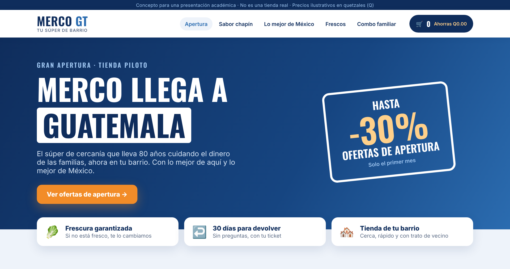

PASO 4 · DEMOSTRACIÓN
Así se vería Merco GT
merco-guatemala.html · concepto

¡OFERTAS DE
APERTURA!
1
Sabor chapín
Frijol, maíz y café de proveedores locales
2
Lo mejor de México
Lo que distingue a Merco, importado
3
Rinde más tu remesa
Combo familiar a precio fijo (O1)
Abrir la tienda →
Concepto propio · Precios ilustrativos en quetzales · Fotos: Wikimedia Commons (créditos en la página)
6b